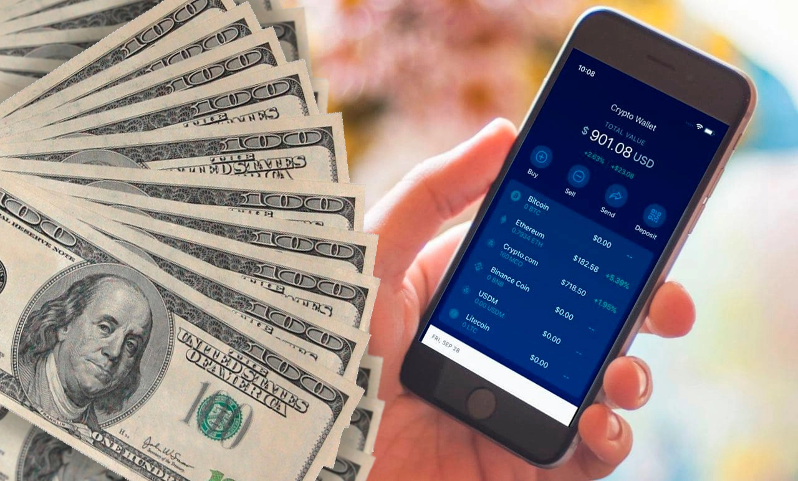
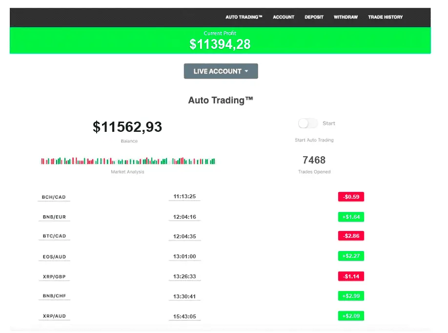
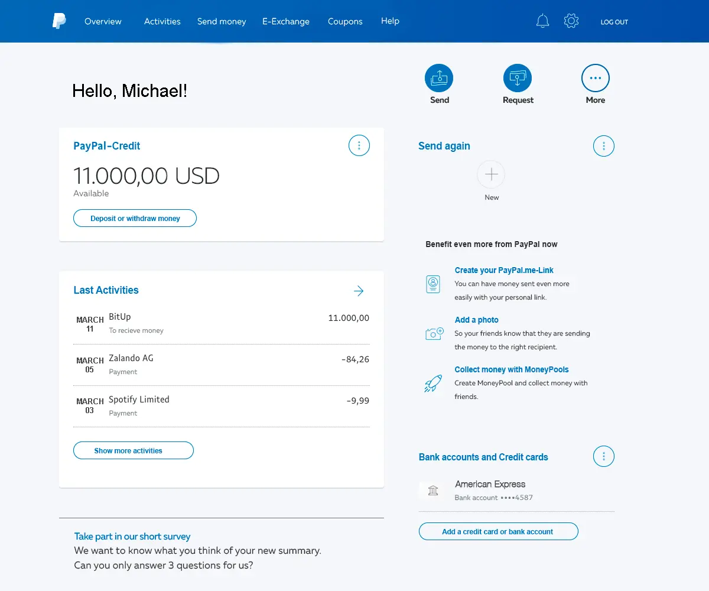
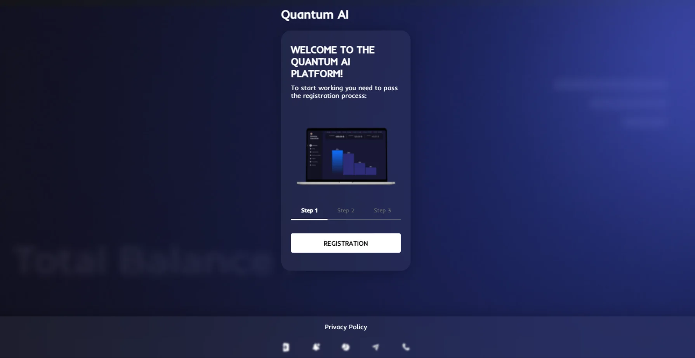
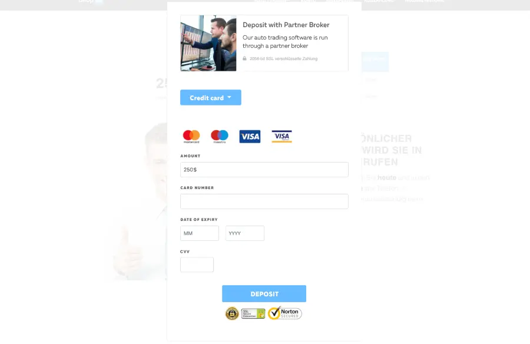
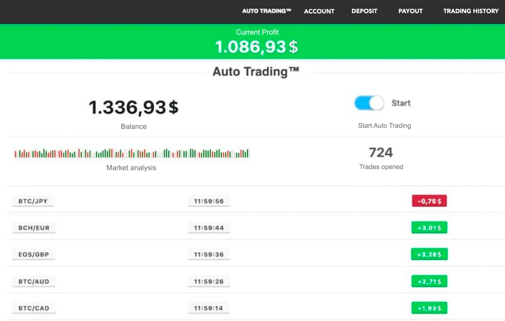

Finansowe przedsiębiorstwa rozpoczynające działalność
TOP 3 aplikacja w Polsce po Facebooku i Instagramie, która sprawiła, że ponad 43,000 Polaków wzbogaciło sięWysoko wykwalifikowani eksperci komputerowi, którzy wcześniej pracowali w Tesli i PayPal, założyli start-up handlowy Quantum AI. Wywołały one spore poruszenie w świecie IT i finansów. Z jego unikalnym algorytmem handlowym, Quantum AI może przynieść wysokie zyski każdemu użytkownikowi. Po prostu poprzez automatyczny handel Bitcoinami i kryptowalutami. Użytkownik nie potrzebuje żadnego know-how ani dużych inwestycji.
Na początku użytkownik musi tylko doładować kredyt w wysokości 250$ na stronie Quantum AI aby rozpocząć w pełni zautomatyzowany proces. Algorytm opracowany przez byłych programistów PayPal wybiera optymalny czas, aby kupić Bitcoina tanio, a następnie sprzedać go ponownie z dużym zyskiem. Ten zwiększa zysk w krótkim czasie i wszystko bez ryzyka.
Pierwszy test zrobił na nas duże wrażenie. 49,71$ w czasie poniżej 5 minut to wielkie osiągnięcie. Chcieliśmy się dowiedzieć jak duży zysk można osiągnąć w dłuższym okresie czasu. Pozostawiliśmy nasze saldo na rachunku handlowym i nadal używaliśmy Quantum AI aby automatycznie generować zyski.
Po około 6 tygodniach mieliśmy niesamowity zysk w wysokości 11 394,28$ na naszym Quantum AI konto po 6 tygodniach - doładowaliśmy tylko 250$ na samym początku początku
Tutaj również postanowiliśmy wypłacić największą część zysku, czyli 11 000 dolarów, na konto PayPal naszego reportera Johna Wilsona i pozwolić Quantum AI zwiększyć resztę pieniędzy.
Moje wyniki z Quantum AI
Po 1 tygodniu: 837.48$ Spędzałem około 5 minut dziennie sprawdzając moje wyniki. Po siedmiu dniach, konto już wykazało zysk w wysokości 837,48$. To jest 334% wzrost w mojej inwestycji. Jestem prawdziwym fanem m.in. platforma, że tak powiem.
Po 2 tygodniach: 2,838.38$ Wszystko poszło znacznie szybciej w drugim tygodniu. Ponieważ miałem już zyski, a te z kolei przynosiły nowe zyski, moje saldo rosło coraz mocniej. Po 14 dniach miałem stan konta w wysokości 2 838,38$
Po 3 tygodniach: 5,659.48$ Tydzień trzeci był również bardzo stabilny i czasami sprawdzałem swoje konto tylko co dwa dni by sprawdzić wyniki. Za każdym razem byłem w stanie określić wyższy zysk - tak niezawodny jak szwajcarski zegarek, Quantum AI stale zwiększał mój zysk. W tym momencie miałem 5,659.48$
Po 4 tygodniach: 8,948.35$ Po czterech tygodniach, zysk wciąż rósł, a ja zacząłem się zastanawiać, co zrobić z wszystkimi pieniędzmi - niebotyczną kwotą 8 948,35$ w tamtym czasie. Już teraz mówi o lotach do Tajlandii lub Japonii.
Po 5 tygodniach: 10,063.21$ Pięć tygodni po rozpoczęciu testu test z początkowo 250$, mój zysk wzrósł do ponad 10.000$ po raz pierwszy, a mianowicie do 10.063,21$. Stało się to powszechne dla mnie, aby zobaczyć więcej pieniędzy przychodzących na moje konto handlowe każdego dziennie.
Po 6 tygodniach: 11,394.28$ Przez cały okres testowy, zarobiłem 11 394,28$. Moi koledzy w redakcji nie mogli uwierzyć, jak ta aplikacja mogła wygenerować tyle pieniędzy w zaledwie 6 tygodni z zaledwie 250$ pierwszym depozytem.
Wniosek
Ale aplikacja nie jest magiczną platformą. Jeśli spojrzysz na na poszczególne transakcje, można zauważyć, że około 70-80% transakcji jest wygranych. Sztuczka polega na tym, że kwoty wygranych transakcji są wyższe niż tych straconych, a wynik końcowy jest taki, że więcej transakcji jest wygranych niż straconych. I to jest właśnie powód, dla którego ta aplikacja był w stanie wiarygodnie zarobić aż do zysku 11 394,28$ w naszym teście.
Spędzałem średnio mniej niż 30 minut dziennie na sprawdzaniu moje zyski i wyniki. I już pod koniec testu -. nawet nie zaglądałem do niego, bo mogłem polegać na tym, że wygrana i tak faktycznie by się pojawiła.
Chociaż nie miałem żadnego doświadczenia z kryptowalutami lub technologią wcześniej, jako początkujący byłem w stanie osiągnąć dobre i godne uwagi wyniki od razu.
Na stronie Quantum AI model biznesowy. Jak Quantum AI pracy?
Zadaliśmy sobie pytanie: Jeśli Quantum AI może generować zyski dla swoich użytkowników tak szybko, jak Quantum AI sam zarabia na siebie? Odpowiedź jest tak prosta, jak to Genialne: Quantum AI zatrzymuje 1% zysku każdego użytkownika. Oznacza to, że. Quantum AI zarabia tylko wtedy, gdy użytkownicy zarabiają pieniądze i dlatego jest bardzo chce przynieść swoim użytkownikom jak najwięcej i jak najwyższe zyski.
Quantum AI pozwala obecnie naszym czytelnikom na przetestowanie platformy za początkowy depozyt w wysokości zaledwie 250$. Możesz wycofać tę kwotę w dowolnym momencie.
Biorąc pod uwagę obecną popularność platformy handlowej, ta początkowy minimalny depozyt może jeszcze wzrosnąć!
Ważne jest, abyś zapisał się do Quantum AI od razu, bo nie wiemy ile miejsc będzie jeszcze będzie dostępnych.
- Zarejestruj się tutaj i otwórz darmowe konto
- Wpłać minimalny wkład w wysokości 250$
- Użyj Quantum AI zarabiać pieniądze
Krok 1: Zarejestruj się tutaj i otwórz darmowe konto
Krok 2: Wpłać minimalną składkę w wysokości 250$
Krok 3: Wykorzystaj Quantum AI do zarabiania pieniędzy
Aktualizacja: Ważne
Ze względu na stałą obecność w mediach i imponujące sukcesy, Quantum AI będzie przyjmował nowych użytkowników tylko do końca roku. Od tego od tego momentu, żaden nowy użytkownik nie może zarejestrować się w Quantum AI. Należy więc szybko się zarejestrować, aby nie przegapić własnej szansy.
Komentarz Quantum AI serwis prasowy: "Prosimy o zrozumienie dla nas i naszych obecnych klientów. W związku z ich licznymi zapytaniami jesteśmy zmuszeni wstrzymać przyjmowanie nowych klientów do systemu. Swobodny dostęp będzie będzie możliwy tylko do końca roku, a w następnym roku cena wejścia będzie znacznie wyższa niż 250$. "